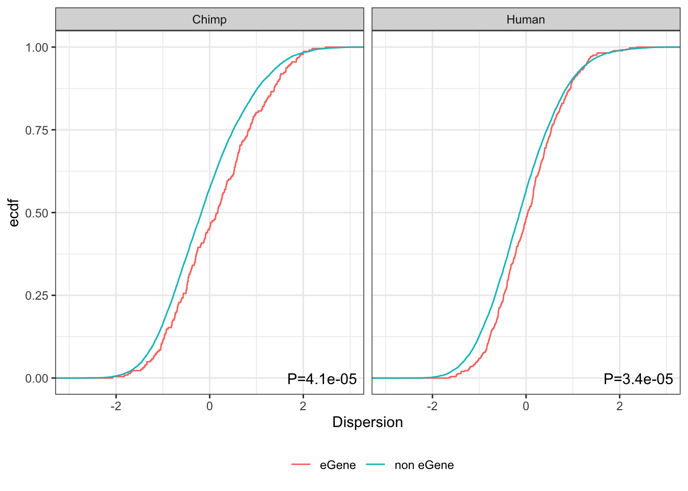

Last updated: 2020-10-25
Checks: 6 1
Knit directory: Comparative_eQTL/analysis/
This reproducible R Markdown analysis was created with workflowr (version 1.5.0). The Checks tab describes the reproducibility checks that were applied when the results were created. The Past versions tab lists the development history.
The R Markdown is untracked by Git. To know which version of the R Markdown file created these results, you’ll want to first commit it to the Git repo. If you’re still working on the analysis, you can ignore this warning. When you’re finished, you can run wflow_publish to commit the R Markdown file and build the HTML.
Great job! The global environment was empty. Objects defined in the global environment can affect the analysis in your R Markdown file in unknown ways. For reproduciblity it’s best to always run the code in an empty environment.
The command set.seed(20190319) was run prior to running the code in the R Markdown file. Setting a seed ensures that any results that rely on randomness, e.g. subsampling or permutations, are reproducible.
Great job! Recording the operating system, R version, and package versions is critical for reproducibility.
Nice! There were no cached chunks for this analysis, so you can be confident that you successfully produced the results during this run.
Great job! Using relative paths to the files within your workflowr project makes it easier to run your code on other machines.
Great! You are using Git for version control. Tracking code development and connecting the code version to the results is critical for reproducibility. The version displayed above was the version of the Git repository at the time these results were generated.
Note that you need to be careful to ensure that all relevant files for the analysis have been committed to Git prior to generating the results (you can use wflow_publish or wflow_git_commit). workflowr only checks the R Markdown file, but you know if there are other scripts or data files that it depends on. Below is the status of the Git repository when the results were generated:
Ignored files:
Ignored: .DS_Store
Ignored: .RData
Ignored: .Rhistory
Ignored: .Rproj.user/
Ignored: WorkingManuscript.zip
Ignored: WorkingManuscript/
Ignored: analysis/.DS_Store
Ignored: analysis/.Rhistory
Ignored: analysis/figure/
Ignored: analysis_temp/.DS_Store
Ignored: big_data/
Ignored: code/.DS_Store
Ignored: code/snakemake_workflow/.DS_Store
Ignored: code/snakemake_workflow/.Rhistory
Ignored: data/.DS_Store
Ignored: data/PastAnalysesDataToKeep/.DS_Store
Ignored: figures/
Ignored: output/.DS_Store
Untracked files:
Untracked: analysis/.index.Rmd.swp
Untracked: analysis/20200907_Response_Point_02.Rmd
Untracked: analysis/20200907_Response_Point_04.Rmd
Untracked: analysis/20200907_Response_Point_07.Rmd
Untracked: analysis/20200907_Response_Point_08.Rmd
Untracked: analysis/20200907_Response_Point_11_2.Rmd
Untracked: analysis/20201012_MakeSourceData.Rmd
Untracked: data/FinalSourceData/
Untracked: data/c5.all.v7.1.symbols.gmt
Untracked: data/c5.all.v7.1.symbols.gmt.categories.tsv.gz
Untracked: data/h.all.v7.1.symbols.gmt
Unstaged changes:
Modified: README.md
Modified: analysis/20200907_Response_OriginalComments.Rmd
Modified: analysis/20200907_Response_Point_06.Rmd
Modified: analysis/20200907_Response_Point_09-2.Rmd
Modified: analysis/20200907_Response_Point_09.Rmd
Modified: analysis/20200907_Response_Point_11.Rmd
Modified: analysis/Final_2_DispersionPlots.Rmd
Modified: analysis/about.Rmd
Modified: analysis/index.Rmd
Modified: analysis_temp/TabulaMuris_analysis2.Rmd
Note that any generated files, e.g. HTML, png, CSS, etc., are not included in this status report because it is ok for generated content to have uncommitted changes.
There are no past versions. Publish this analysis with wflow_publish() to start tracking its development.
Original reviewer point:
Did the authors test directly whether eQTLs were enriched in genes with a high dispersion? I could not find this going back through the paper. This seems almost trivially likely to be true. I may have missed this result? Or did the authors worry this is too likely to be confounded with cell type? Either way, this seems like a result that may be useful to show even if the authors did acknowledge that it was likely to be confounded.
What we have shown already, is that chimp specific eGenes have more dispersion in chimp than in human (vice versa). But the reviewer is asking something slightly different. Let’s look into it…
First, load necessary libraries… and read in data
library(tidyverse)
library(knitr)
source("../code/CustomFunctions.R")
Overdispersion <- read.delim("../output/Final/TableS3.tab")
Chimp.eGenes <- read.delim("../output/Final/TableS8.tab")
Human.eGenes <- read.delim("../data/GTEX_v8_eGenes/Heart_Left_Ventricle.v8.egenes.txt.gz")
GeneNames <- read.delim("../data/Biomart_export.Hsap.Ptro.orthologs.txt.gz") %>%
distinct(Gene.stable.ID, .keep_all = T) %>%
filter(Chimpanzee.homology.type=="ortholog_one2one")
head(Overdispersion) %>% kable()| gene | HGNC.symbol | Chimp.Mean.Expression | Human.Mean.Expression | Chimp.Overdispersion | Human.Overdispersion | Chimp.Mean.Adjusted.Dispersion | Human.Mean.Adjusted.Dispersion | Chimp.SE | Human.SE | P | q.value |
|---|---|---|---|---|---|---|---|---|---|---|---|
| ENSG00000186891 | TNFRSF18 | -20.04475 | -22.72507 | 2.1055309 | 0.6147549 | 2.3121799 | 0.0805422 | 0.3799365 | 1.2023115 | 0.0054 | 0.0317946 |
| ENSG00000186827 | TNFRSF4 | -18.77917 | -19.33208 | 0.6203152 | 0.8582437 | 1.6405781 | 1.9529450 | 0.2157222 | 0.3020914 | 0.3439 | 0.3126680 |
| ENSG00000078808 | SDF4 | -17.25701 | -17.12363 | 0.0583115 | 0.0420739 | -0.5386575 | -0.8183559 | 0.2215974 | 0.2267717 | 0.3624 | 0.3210003 |
| ENSG00000176022 | B3GALT6 | -18.54108 | -18.71933 | 0.0921186 | 0.0543682 | -0.2006514 | -0.6565939 | 0.2894171 | 0.2657152 | 0.3434 | 0.3124612 |
| ENSG00000184163 | C1QTNF12 | -20.22992 | -20.96884 | 0.9431169 | 0.3705950 | 1.4085703 | 0.3109663 | 0.3138983 | 0.4147022 | 0.0662 | 0.1329230 |
| ENSG00000160087 | UBE2J2 | -18.96377 | -18.91956 | 0.0832274 | 0.0533650 | -0.4256215 | -0.7154168 | 0.2888279 | 0.3411127 | 0.4752 | 0.3657044 |
head(Chimp.eGenes) %>% kable()| BestSNP | gene | beta | statistic | pvalue | FDR | BF | TESTS |
|---|---|---|---|---|---|---|---|
| ID.19.305637.C.G | ENSPTRG00000010141 | 1.1665064 | 3.021675 | 0.0057314 | 0.7342957 | 1 | 459 |
| ID.19.305637.C.G | ENSPTRG00000010142 | 0.7623738 | 3.247842 | 0.0033040 | 0.6614980 | 1 | 546 |
| ID.19.330232.T.G | ENSPTRG00000049019 | 0.4123193 | 2.958944 | 0.0066627 | 0.7592049 | 1 | 931 |
| ID.19.464214.CAG.C | ENSPTRG00000010153 | -0.4969125 | -2.946400 | 0.0068655 | 0.7628932 | 1 | 931 |
| ID.19.476671.G.A | ENSPTRG00000010155 | -0.3514492 | -3.420594 | 0.0021534 | 0.5970544 | 1 | 991 |
| ID.19.624908.C.T | ENSPTRG00000049419 | 1.7797750 | 3.025529 | 0.0056785 | 0.7335257 | 1 | 981 |
head(Human.eGenes) %>% kable()| gene_id | gene_name | gene_chr | gene_start | gene_end | strand | num_var | beta_shape1 | beta_shape2 | true_df | pval_true_df | variant_id | tss_distance | chr | variant_pos | ref | alt | num_alt_per_site | rs_id_dbSNP151_GRCh38p7 | minor_allele_samples | minor_allele_count | maf | ref_factor | pval_nominal | slope | slope_se | pval_perm | pval_beta | qval | pval_nominal_threshold | log2_aFC | log2_aFC_lower | log2_aFC_upper |
|---|---|---|---|---|---|---|---|---|---|---|---|---|---|---|---|---|---|---|---|---|---|---|---|---|---|---|---|---|---|---|---|---|
| ENSG00000227232.5 | WASH7P | chr1 | 14410 | 29553 | - | 1364 | 1.01157 | 280.800 | 282.379 | 0.0000008 | chr1_665098_G_A_b38 | 635545 | chr1 | 665098 | G | A | 1 | rs114979547 | 91 | 94 | 0.1217620 | 1 | 0.0000002 | 0.403338 | 0.0756735 | 0.0003000 | 0.0002128 | 0.0003112 | 0.0002359 | 0.697958 | 0.513705 | 0.873141 |
| ENSG00000240361.1 | OR4G11P | chr1 | 62948 | 63887 | + | 1520 | 1.01235 | 326.604 | 289.739 | 0.0035926 | chr1_665098_G_A_b38 | 602150 | chr1 | 665098 | G | A | 1 | rs114979547 | 91 | 94 | 0.1217620 | 1 | 0.0023564 | -0.259344 | 0.0845860 | 0.6927340 | 0.6864840 | 0.2863100 | 0.0002033 | -0.775033 | -1.281557 | -0.473808 |
| ENSG00000186092.4 | OR4F5 | chr1 | 69091 | 70008 | + | 1541 | 1.01869 | 326.003 | 287.455 | 0.0000906 | chr1_807641_T_C_b38 | 738550 | chr1 | 807641 | T | C | 1 | rs3964475 | 171 | 195 | 0.2525910 | 1 | 0.0000405 | 0.291123 | 0.0699246 | 0.0263974 | 0.0270163 | 0.0250127 | 0.0002079 | 0.932644 | 0.649848 | 1.331262 |
| ENSG00000268903.1 | RP11-34P13.15 | chr1 | 135141 | 135895 | - | 1863 | 1.03811 | 353.346 | 282.101 | 0.0006611 | chr1_986007_G_A_b38 | 850112 | chr1 | 986007 | G | A | 1 | rs115014500 | 8 | 8 | 0.0103627 | 1 | 0.0003129 | -0.900366 | 0.2470360 | 0.1963520 | 0.1934770 | 0.1206300 | 0.0002038 | -6.643856 | -6.643856 | -6.643856 |
| ENSG00000269981.1 | RP11-34P13.16 | chr1 | 137682 | 137965 | - | 1868 | 1.05087 | 334.272 | 277.796 | 0.0002781 | chr1_1028281_C_T_b38 | 890316 | chr1 | 1028281 | C | T | 1 | rs13303147 | 28 | 29 | 0.0375648 | 1 | 0.0001057 | -0.587608 | 0.1496360 | 0.0744926 | 0.0768662 | 0.0598632 | 0.0002240 | -1.615290 | -6.094829 | -1.119854 |
| ENSG00000279457.4 | RP11-34P13.18 | chr1 | 185217 | 195411 | - | 2234 | 1.04471 | 378.207 | 275.991 | 0.0003427 | chr1_665098_G_A_b38 | 469687 | chr1 | 665098 | G | A | 1 | rs114979547 | 91 | 94 | 0.1217620 | 1 | 0.0001272 | 0.340850 | 0.0878486 | 0.1064890 | 0.1086650 | 0.0785110 | 0.0001944 | 0.401163 | 0.248050 | 0.612973 |
head(GeneNames) %>% kable()| Gene.stable.ID | Transcript.stable.ID | Chimpanzee.gene.stable.ID | Chimpanzee.gene.name | Chimpanzee.protein.or.transcript.stable.ID | Chimpanzee.homology.type | X.id..target.Chimpanzee.gene.identical.to.query.gene | X.id..query.gene.identical.to.target.Chimpanzee.gene | dN.with.Chimpanzee | dS.with.Chimpanzee | Chimpanzee.orthology.confidence..0.low..1.high. |
|---|---|---|---|---|---|---|---|---|---|---|
| ENSG00000198888 | ENST00000361390 | ENSPTRG00000042641 | MT-ND1 | ENSPTRP00000061407 | ortholog_one2one | 94.6541 | 94.6541 | 0.0267 | 0.5455 | 1 |
| ENSG00000198763 | ENST00000361453 | ENSPTRG00000042626 | MT-ND2 | ENSPTRP00000061406 | ortholog_one2one | 96.2536 | 96.2536 | 0.0185 | 0.7225 | 1 |
| ENSG00000210127 | ENST00000387392 | ENSPTRG00000042642 | MT-TA | ENSPTRT00000076396 | ortholog_one2one | 100.0000 | 100.0000 | NA | NA | NA |
| ENSG00000198804 | ENST00000361624 | ENSPTRG00000042657 | MT-CO1 | ENSPTRP00000061408 | ortholog_one2one | 98.8304 | 98.8304 | 0.0065 | 0.5486 | 1 |
| ENSG00000198712 | ENST00000361739 | ENSPTRG00000042660 | MT-CO2 | ENSPTRP00000061402 | ortholog_one2one | 97.7974 | 97.7974 | 0.0106 | 0.5943 | 1 |
| ENSG00000228253 | ENST00000361851 | ENSPTRG00000042653 | MT-ATP8 | ENSPTRP00000061400 | ortholog_one2one | 94.1176 | 94.1176 | 0.0325 | 0.3331 | 1 |
Plot dispersion of chimp eGenes vs non eGenes
Chimp.Data.To.Plot <- Chimp.eGenes %>%
inner_join(GeneNames, by=c("gene"="Chimpanzee.gene.stable.ID")) %>%
inner_join(Overdispersion, by=c("Gene.stable.ID"="gene")) %>%
dplyr::select(Chimp.Mean.Adjusted.Dispersion, q.value=FDR, Gene.stable.ID) %>%
mutate(eGene=q.value<0.1)
wilcox.test(Chimp.Mean.Adjusted.Dispersion~eGene, data=Chimp.Data.To.Plot)
Wilcoxon rank sum test with continuity correction
data: Chimp.Mean.Adjusted.Dispersion by eGene
W = 994733, p-value = 4.682e-05
alternative hypothesis: true location shift is not equal to 0ggplot(Chimp.Data.To.Plot, aes(x=Chimp.Mean.Adjusted.Dispersion, color=eGene)) +
stat_ecdf() +
theme_bw()Same for human eGenes vs non eGenes
Human.Data.To.Plot <- Human.eGenes %>%
mutate(gene=str_remove(gene_id, "\\.\\d+$")) %>%
inner_join(Overdispersion, by=c("gene")) %>%
dplyr::select(Human.Mean.Adjusted.Dispersion, q.value=qval, Gene.stable.ID=gene) %>%
mutate(eGene=q.value<0.1)
wilcox.test(Human.Mean.Adjusted.Dispersion~eGene, data=Human.Data.To.Plot)
Wilcoxon rank sum test with continuity correction
data: Human.Mean.Adjusted.Dispersion by eGene
W = 20851189, p-value = 0.1276
alternative hypothesis: true location shift is not equal to 0ggplot(Human.Data.To.Plot, aes(x=Human.Mean.Adjusted.Dispersion, color=eGene)) +
stat_ecdf() +
theme_bw()Hmm, this is again an example of assymetrical results may be a result of analyzing eGenes with vastly different power. Let’s use the same approach I used in the manuscript, and just consider the top 500 human eGenes…
EgenesTested <- TsvToCombinedEgenes(Chimp.tsv = "../output/ChimpEgenes.eigenMT.txt.gz", Human.tsv = "../data/GTEX_v8_eGenes/Heart_Left_Ventricle.v8.egenes.txt.gz", SysToID.tsv = "../data/Biomart_export.Hsap.Ptro.orthologs.txt.gz", HumanTsvType = "GTEx")
EgenesTested.grouped <- AddGroups(EgenesTested, HumanEgeneCount=500)
Chimp.Data.To.Plot <- EgenesTested.grouped %>%
inner_join(Overdispersion, by=c("H.gene"="gene")) %>%
mutate(eGene=group %in% c("both", "chimp"))
Chimp.Test <- wilcox.test(Chimp.Mean.Adjusted.Dispersion~eGene, data=Chimp.Data.To.Plot)
Chimp.Test
Wilcoxon rank sum test with continuity correction
data: Chimp.Mean.Adjusted.Dispersion by eGene
W = 989832, p-value = 4.14e-05
alternative hypothesis: true location shift is not equal to 0ggplot(Chimp.Data.To.Plot, aes(x=Chimp.Mean.Adjusted.Dispersion, color=eGene)) +
stat_ecdf() +
theme_bw()Human.Data.To.Plot <- EgenesTested.grouped %>%
inner_join(Overdispersion, by=c("H.gene"="gene")) %>%
mutate(eGene=group %in% c("both", "human"))
Human.Test <- wilcox.test(Human.Mean.Adjusted.Dispersion~eGene, data=Human.Data.To.Plot)
Human.Test
Wilcoxon rank sum test with continuity correction
data: Human.Mean.Adjusted.Dispersion by eGene
W = 2062701, p-value = 3.351e-05
alternative hypothesis: true location shift is not equal to 0ggplot(Human.Data.To.Plot, aes(x=Human.Mean.Adjusted.Dispersion, color=eGene)) +
stat_ecdf() +
theme_bw()So, there is a modest, but very significant trend as the reviewer suspected: eGenes have higher dispersion (or at least, the top eGenes do, since with sufficient power near every gene is an eGene).
Let’s save out a figure to show this
Tests <- data.frame(species=c("Chimp", "Human"), P=c(Chimp.Test$p.value, Human.Test$p.value)) %>%
mutate(label=paste0("P=", format.pval(P, digits = 2)))
Tests species P label
1 Chimp 4.139519e-05 P=4.1e-05
2 Human 3.351107e-05 P=3.4e-05PlotToSave <- EgenesTested.grouped %>%
inner_join(Overdispersion, by=c("H.gene"="gene")) %>%
mutate(Chimp=group %in% c("both", "chimp")) %>%
mutate(Human=group %in% c("both", "human")) %>%
dplyr::select(Chimp,Human,H.gene, Human.Mean.Adjusted.Dispersion, Chimp.Mean.Adjusted.Dispersion) %>%
gather(key="species", value="eGene", Chimp, Human) %>%
gather(key="Dispersion.species", value="Dispersion", Human.Mean.Adjusted.Dispersion, Chimp.Mean.Adjusted.Dispersion) %>%
mutate(Dispersion.species=recode(Dispersion.species, Human.Mean.Adjusted.Dispersion="Human", Chimp.Mean.Adjusted.Dispersion="Chimp")) %>%
filter(species==Dispersion.species) %>%
mutate(eGene=if_else(eGene, "eGene", "non eGene")) %>%
ggplot(aes(x=Dispersion)) +
stat_ecdf(aes(color=eGene)) +
geom_text(
data = Tests,
mapping = aes(x = Inf, y = -Inf, label = label),
hjust = 1.1,
vjust = -1
) +
ylab("ecdf") +
facet_wrap(~species) +
xlim(c(-3,3)) +
theme_bw() +
theme(legend.position="bottom", legend.title = element_blank())
PlotToSave
Write out the plot
ggsave("../figures/OriginalArt/ResponseToReviewers.Point8_eGenesAndDispersion.pdf", PlotToSave, height=2.5, width=4)
sessionInfo()R version 3.6.1 (2019-07-05)
Platform: x86_64-apple-darwin15.6.0 (64-bit)
Running under: macOS Catalina 10.15.5
Matrix products: default
BLAS: /Library/Frameworks/R.framework/Versions/3.6/Resources/lib/libRblas.0.dylib
LAPACK: /Library/Frameworks/R.framework/Versions/3.6/Resources/lib/libRlapack.dylib
locale:
[1] en_US.UTF-8/en_US.UTF-8/en_US.UTF-8/C/en_US.UTF-8/en_US.UTF-8
attached base packages:
[1] stats graphics grDevices utils datasets methods base
other attached packages:
[1] cowplot_1.0.0 gridExtra_2.3 edgeR_3.26.8 limma_3.40.6
[5] MASS_7.3-53 knitr_1.26 forcats_0.4.0 stringr_1.4.0
[9] dplyr_1.0.2 purrr_0.3.3 readr_1.3.1 tidyr_1.0.0
[13] tibble_3.0.3 ggplot2_3.3.2 tidyverse_1.3.0
loaded via a namespace (and not attached):
[1] Rcpp_1.0.5 locfit_1.5-9.1 lubridate_1.7.9 lattice_0.20-38
[5] assertthat_0.2.1 rprojroot_1.3-2 digest_0.6.23 R6_2.4.1
[9] cellranger_1.1.0 backports_1.1.5 reprex_0.3.0 evaluate_0.14
[13] httr_1.4.1 highr_0.8 pillar_1.4.6 rlang_0.4.7
[17] readxl_1.3.1 rstudioapi_0.10 rmarkdown_1.18 labeling_0.3
[21] munsell_0.5.0 broom_0.7.0 compiler_3.6.1 httpuv_1.5.2
[25] modelr_0.1.5 xfun_0.11 pkgconfig_2.0.3 htmltools_0.4.0
[29] tidyselect_1.1.0 workflowr_1.5.0 fansi_0.4.0 crayon_1.3.4
[33] dbplyr_1.4.2 withr_2.1.2 later_1.0.0 grid_3.6.1
[37] jsonlite_1.6 gtable_0.3.0 lifecycle_0.2.0 DBI_1.0.0
[41] git2r_0.26.1 magrittr_1.5 scales_1.1.1 cli_2.0.0
[45] stringi_1.4.3 farver_2.0.3 fs_1.3.1 promises_1.1.0
[49] xml2_1.2.2 ellipsis_0.3.0 generics_0.0.2 vctrs_0.3.4
[53] tools_3.6.1 glue_1.4.2 hms_0.5.2 yaml_2.2.0
[57] colorspace_1.4-1 rvest_0.3.5 haven_2.2.0